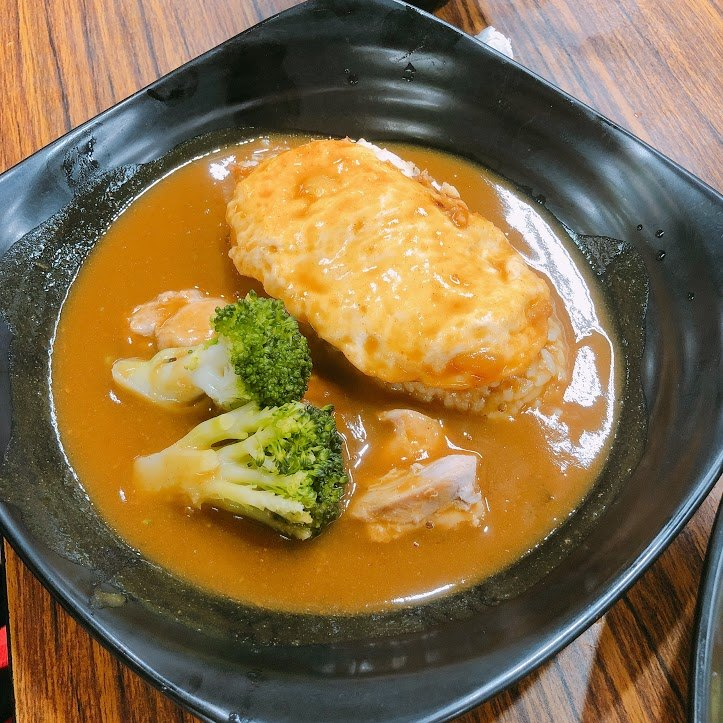
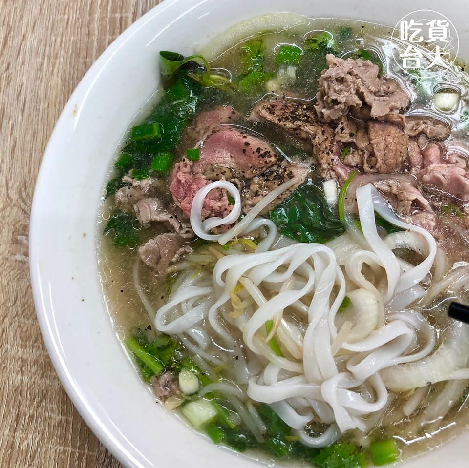
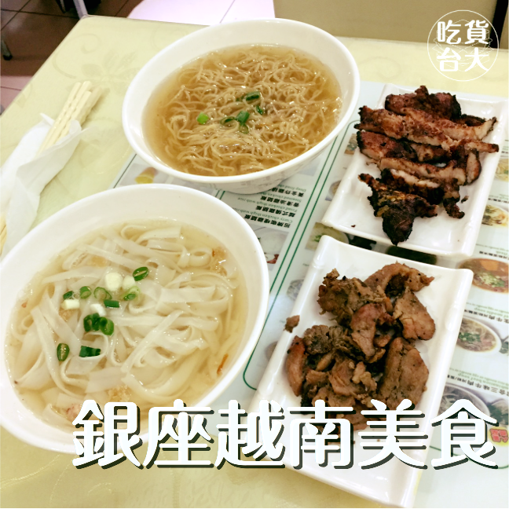
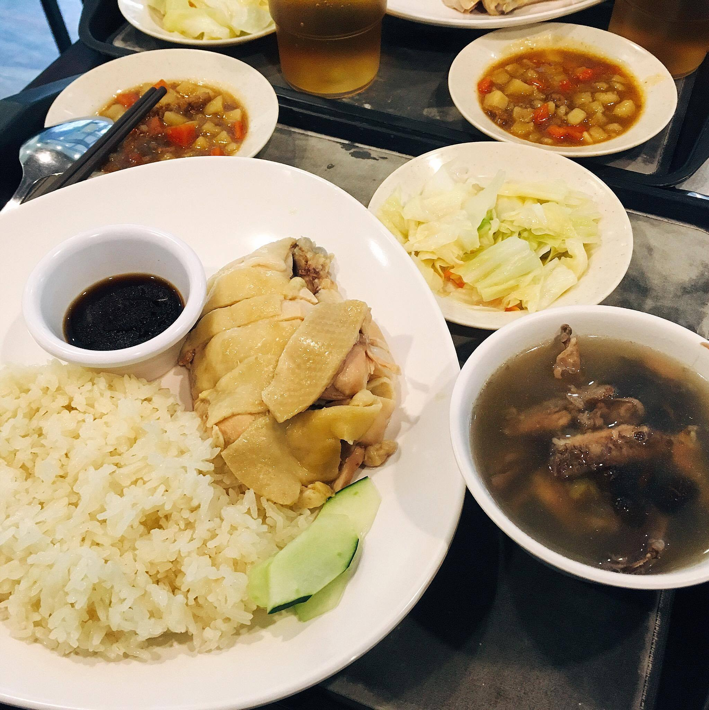

如來素食樂園是間經營36年的素食自助餐老店，在素食界可是人人都知曉！除了菜色多樣化、食材新鮮、還有招牌必吃的蘿蔔糕，秤重計價不算特別便宜，但以台北市區物價還合理，是公館素食自助餐的好選擇。

下課便宜吃！（NT$100以下）

如來素食樂園
竹の丼飯屋
竹の丼飯屋是一間平價的高CP值丼飯，午餐和晚餐時間都有開，有時還有販賣奶酪（有焦糖、巧克力等口味），因為位於水源市場內，所以位置較狹小，大約可以容納10個人以內的小店！


騰堂麵包茶飲
騰堂麵包茶飲是一間很特別的麵包店，有別於一般展示櫃自己夾取，它是採取櫃檯點麵包的方式，比較衛生、麵包也比較限量！
早上10:30出第一爐，客人絡繹不絕，如果想搶到指定的口味還要前一天打電話訂購以免向隅！
大叔蔬食
一句話形容：「清淡好吃素食。」
#吃貨台大美食分區_後門118
#家常清淡吃健康_清淡好吃的店
#家常小菜吃飽飽_大家熟悉的平凡小店
#今天下課隨便揪_一般吃飯的好選擇
大叔蔬食在118往後走至接近此燈亮有餅的對面，店內約有30-40個位置，小編在平日五點多去時店內約兩成滿。上菜速度有點慢，可能需要等個10分鐘，但老闆也很有誠意的會請等太久的同學小菜。這間店是全素料理，適合吃素的同學們！


何太守港菠蘿包專賣店
一句話形容：「公館商圈的美味菠蘿包！」
#吃貨台大美食分區_公館商圈
#銅板小美食_便宜好吃的店
#拿了就走真輕鬆_這家店沒有地方坐喔
三時午（水源）
三時午咖哩屋位在水源市場裡，座位不多，也滿擁擠的，很多人都會選擇外帶，外帶老闆會把肉和咖哩分開放，不用擔心外帶口味會改變。菜單很簡單，總共有八種可以選擇，價格介於50 到120元，算是十分平價的咖哩店。

騰堂麵包茶飲
騰堂麵包茶飲是一間很特別的麵包店，有別於一般展示櫃自己夾取，它是採取櫃檯點麵包的方式，比較衛生、麵包也比較限量！
早上10:30出第一爐，客人絡繹不絕，如果想搶到指定的口味還要前一天打電話訂購以免向隅！
竹の丼飯屋
竹の丼飯屋是一間平價的高CP值丼飯，午餐和晚餐時間都有開，有時還有販賣奶酪（有焦糖、巧克力等口味），因為位於水源市場內，所以位置較狹小，大約可以容納10個人以內的小店！

黎記北越河粉
黎記北越河粉位於118的小巷內，在合益佳雞肉飯的旁邊，菜單多樣，除了越式料理外，還有很多口味的水餃可以點，麵食類都能做麵條的更換，很適合喜歡嘗試各樣越式口味及麵條組合的人，價錢介於中間，食物分量都挺有誠意的，桌上還有蒜頭辣椒、檸檬可供調味。喜歡越式料理但習慣在社科院附近覓食的人，可以嘗試看看!
三時午（水源）
三時午咖哩屋位在水源市場裡，座位不多，也滿擁擠的，很多人都會選擇外帶，外帶老闆會把肉和咖哩分開放，不用擔心外帶口味會改變。菜單很簡單，總共有八種可以選擇，價格介於50 到120元，算是十分平價的咖哩店。

河內美食
在午、晚餐的時段從復興南路拐進118巷中段，可以看見河內美食的招牌底下絡繹不絕的人潮。窗明几淨的用餐環境、品項多樣的餐點，使這間越南料理能在異國美食一級戰區的118佔有一席之地。店內的座位數不多，但等候的時間不算長，餐點多在100塊上下，也有越南春捲、法國麵包等輕食提供小鳥胃的饕客做選擇。
銀座越南美食
銀座越南美食位在魚雷起司三明治對面的巷子裡，人性空間總店的斜對面。
地圖連結：http://t.cn/RuYh0di。銀座越南美食位在前門週邊，營業時間為每天早上十一點到下午兩點、傍晚五點到晚上八點。店名聽起來極富日本味，但其實販售的皆是越南料理。至於名稱的由來是為了紀念當時，一家人在西貢一位日本人開設的「銀座餐廳」，所留下的美好回憶，其母親的手藝也是承襲自那位師傅，因此就以銀座為名表達感恩與思念。銀座越南美食從1976年開幕至今歷經40個年頭，餐廳現在已由當時來台越南華僑的第二代接手。


憶馬當鮮
餐廳位在118巷的前段，咖哩廚房的旁邊。
店內位子不少，用餐時間不太用等，每天會推出特餐特價90元，店裡有飲料跟湯可以自取，大部份的餐點價格在90~150之間，有各種不同的馬來西亞料理，種類還滿多的。
迦南餐廳
迦南餐廳是進駐在男七舍餐飲業者，平常日的中午跟晚上有開放營業，其餘時間會製作便當的訂單。他的特色是非常便宜的價格、十足的分量、以及多樣自由選擇的菜色，如果是住宿生的吃貨們，不能錯過這間小編心目中的首屈一指的學生餐廳！

正香馬來西亞餐室
正香的老闆是道地的馬來西亞人，所以做出來的料理十分有風味。店內約有10桌，但一到吃飯時間總是排滿了人。除了小編點的海南雞套餐之外，另外供有無配菜的，是95元。正香的開店時間蠻任性的，中午跟晚上營業的時間都不長，也蠻常經過看到店休，建議要去之前可以查一下他們的粉專。
塩胖手作麵包本舖
一句話形容：「鹹甜麵包、蛋糕零嘴好選擇」
#吃貨台大美食分區_科技大樓
#拿了就走真輕鬆_這家店沒有地方坐喔
#突然想吃點甜食_平價甜點都在這